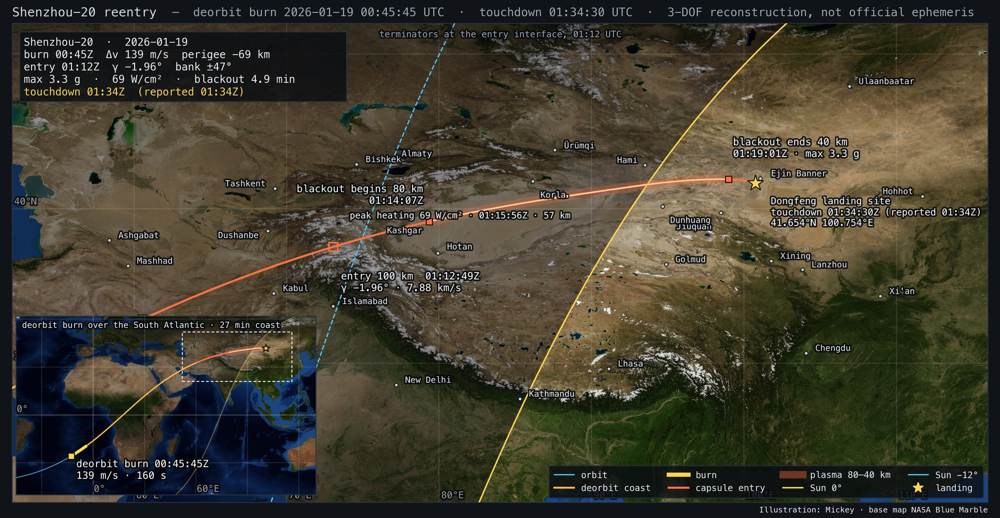
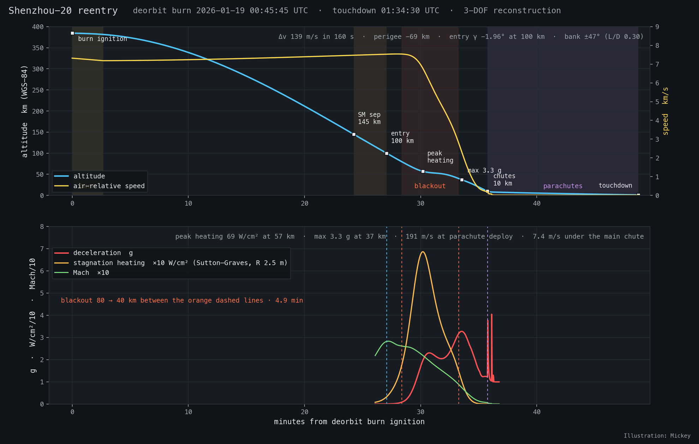
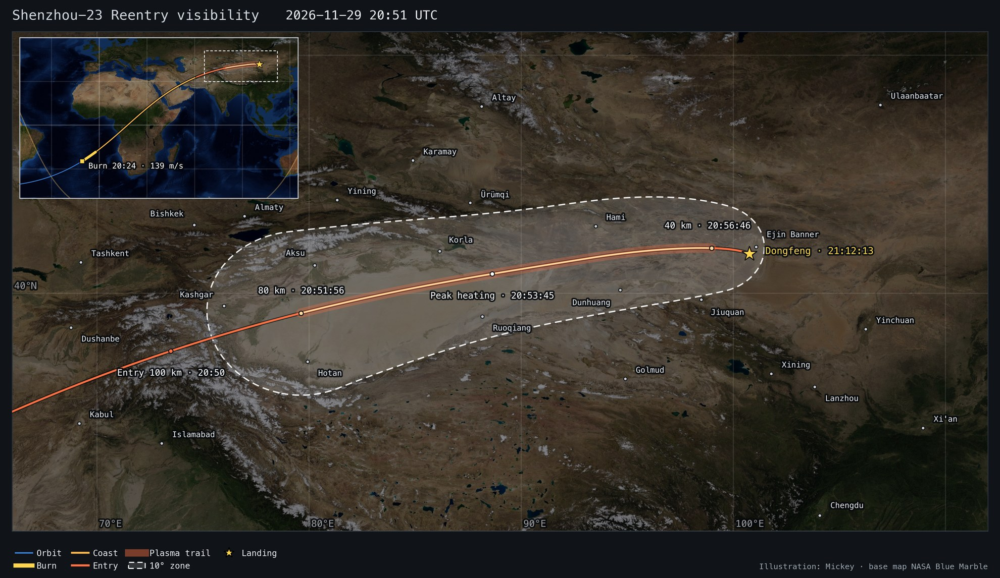

Modeling a Shenzhou reentry
How the return of a Shenzhou spacecraft from the China Space Station is reconstructed from public reports — the dynamics, the vehicle and atmosphere models, the solver — what it gives for the uncrewed Shenzhou-20 return of 19 January 2026, and a forecast of the Shenzhou-23 return of late November 2026.
2 · The published return sequence
3 · Methodology
4 · Shenzhou-20 inputs
5 · Shenzhou-20 results
6 · Audit of the earlier Keplerian fit
7 · Limitations
8 · Forecast: Shenzhou-23, 29 November 2026
9 · Another mission
10 · Files and reproduction
1 · Summary
A Shenzhou return lasts about fifty minutes from the orbital-module separation to touchdown, but only a few of its numbers are published: the separation minute, the landing minute and site, and generic heights for the sequence (145 km service-module separation, 100 km entry, 80–40 km blackout, 10 km parachutes). The reconstruction fills the gap with physics. A three-degree-of-freedom point-mass simulation on a rotating, oblate Earth carries the spacecraft from its last catalogued orbit through a finite deorbit burn, the coast, the lifting capsule entry with its hypersonic drag and bank-steered lift, the plasma blackout, the drogue and main parachutes, down to the terrain height of the Dongfeng landing site. Three free parameters — the burn delta-v, the bank angle and the time of its single reversal — are then solved so that the capsule arrives at the reported landing point at the reported minute. Everything else (entry angle, loads, heating, blackout duration, speeds at each stage) is an output that can be checked against the published figures.
The result is self-consistent with every published number of the sequence except one: the capsule must enter at about −2.0°, not the 1.5–1.7° quoted in explainers, because the reported timeline leaves no time for a shallower entry (section 5.4). The reconstruction is a model built from public reports, not official ephemeris.
2 · The published return sequence
Chinese broadcasters and CASC publish the same return choreography for every mission since Shenzhou-13 ("fast return": five orbits of free flight after undocking, then about fifty minutes from orbital-module separation to touchdown). The heights below are the ones used as model switch points.
| stage | published figure | used in the model as |
|---|---|---|
| orbital-module separation | two 90° slews, ~120 s in all; separation reported to the minute | ignition = reported minute + ~90 s (scanned 60–150 s) |
| retro burn | 150–180 s, "2500 N main engine" | 160 s constant-acceleration retrograde burn, Δv solved |
| service-module separation | ~145 km | phase switch: capsule aerodynamics and lift from here |
| trim attitude | ~120 km, heat shield forward | event only (lift is negligible above 100 km) |
| entry interface | ~100 km at ~7 km/s | reference height for the entry angle |
| blackout | 80 → 40 km, "4–6 min", ~200 m/s at 10 km afterwards | height crossings; plasma trail drawn between them |
| parachutes | pilot → drogue (24 m²) → main 1200 m² from 10 km; 7–8 m/s under the main | drogue at 10 km, main at 8 km (reefed), drag areas calibrated to those speeds |
| heat-shield jettison | ~6 km | mass step −300 kg |
| retro-rockets | 1 m above ground, touchdown 1–2 m/s | not modeled; the run ends at the terrain height |
3 · Methodology
3.1 · Modeling chain
The whole chain is in model/shenzhou_reentry.py (about 450 lines) with the mission-specific numbers in a JSON file, so another return is a new JSON file, not new code.
3.2 · Equations of motion
The state is the position and velocity in the Earth-fixed (ECEF) frame, which rotates with the planet. Working in this frame makes the atmosphere stationary and the landing site a fixed point; the price is the Coriolis and centrifugal terms. With ω the Earth's rotation vector:
Heights are geodetic above the WGS-84 ellipsoid (Bowring's closed form), so the 145 / 100 / 80 / 40 / 10 km switch points and the 1 km landing terrain are compared with the same convention the viewer draws. Integration is SciPy's DOP853 with relative and absolute tolerances of 10⁻⁹, a 10 s maximum step in the coast, 2 s in the entry and 0.5 s under the parachutes; each phase ends on an altitude-crossing event found by the integrator's root finder.
3.3 · Initial state
The orbit before the burn comes from the spacecraft's own two-line element set (Space-Track), propagated with SGP4 to the ignition time. SGP4 outputs the TEME frame; the state is rotated into ECEF with the IAU-82 Greenwich mean sidereal time (UTC taken as UT1, an error below 0.004° in longitude) and the velocity corrected by −ω × r. The chosen set has its epoch after the burn (00:56 UTC) but its mean motion continues the decay trend of the previous sets, so it still represents the pre-burn orbit; a set propagated from the previous day differs by well under a kilometre at ignition.
3.4 · Deorbit burn
A constant acceleration along the inertial velocity, pointing backwards, for the published burn duration. The retrograde direction is an assumption: Chinese explainers describe the propulsion module "tilting up" during the burn, i.e. a pitch component, which the model does not include. For the solved Δv and a 5.7 t return-plus-propulsion stack the implied thrust is 5.0 kN, two of the four 2.5 kN main engines — consistent with the quoted "2500 N" engine and the 150–180 s duration, which a 10 kN burn would halve.
3.5 · Atmosphere
Density and temperature come from an NRLMSIS 2.1 column (pymsis) evaluated once above the landing site at the landing epoch and cached, with the standard atmosphere (US76) as an alternative. A January column at 41° N is markedly thinner than the standard atmosphere where the capsule decelerates:
| height km | 40 | 50 | 60 | 70 | 80 | 90 | 100 | 110 | 120 | 145 |
|---|---|---|---|---|---|---|---|---|---|---|
| ρMSIS / ρUS76 | 0.95 | 0.96 | 0.87 | 0.78 | 0.73 | 0.82 | 0.85 | 0.73 | 0.68 | 0.71 |
Solar and geomagnetic indices are fixed (F10.7 = 150 sfu, Ap = 10): below 100 km MSIS is nearly insensitive to them, and above 100 km the capsule is still in near-vacuum coast. The atmosphere co-rotates with the Earth and has no wind. The speed of sound uses the MSIS temperature, capped at 400 K above the mesopause so the Mach number stays meaningful.
3.6 · Capsule aerodynamics and steering
The return module is a Soyuz-class blunt capsule: 3,240 kg, 2.52 m across (S = 4.99 m²), hypersonic drag coefficient 1.30 and lift-to-drag ratio 0.30 at its trim angle, which gives a ballistic coefficient near 500 kg/m². Both coefficients vary with Mach number in the usual way for such bodies — a drag rise through the supersonic regime, a drop to about 1.05 when subsonic, and the trim lift fading out through transonic flight:
| Mach | ≤ 0.6 | 0.9 | 1.2 | 2 | 4 | 6 | ≥ 6 |
|---|---|---|---|---|---|---|---|
| CD | 1.05 | 1.20 | 1.40 | 1.42 | 1.30 | 1.30 | 1.30 |
| L/D | 0 (≤ 0.8) | 0.03 | 0.10 | 0.20 | 0.25 | 0.30 | 0.30 |
The lift vector lies in the plane normal to the velocity: l̂ points "up" (the component of the radial direction perpendicular to the velocity) and ŝ sideways. The bank angle σ rolls the lift between them. Shenzhou flies a roll-modulated guided entry: lift up stretches the range and lowers the loads, lift down shortens it, and the sign alternates to null the cross-range. The model represents this with a constant bank magnitude and a single sign reversal; both are solved. It reproduces the flown range and cross-range, not the actual guidance law. Lift acts only after service-module separation (the stack before that is modeled with the capsule's drag area and the combined mass, which is negligible above 145 km anyway).
3.7 · Parachute phases
| phase | trigger | drag area CD·S | mass | notes |
|---|---|---|---|---|
| drogue | 10 km | capsule + 19.2 m² | 3,240 kg | 24 m² drogue, CD 0.8, inflates over 2 s |
| main, reefed | 8 km | 35 % of 920 m² | 3,240 kg | drogue released; reefed 8 s |
| main, full | +8 s | 920 m² | 3,240 kg | disreefs over 3 s |
| main, shield off | 6 km | 920 m² | 2,940 kg | 7.5 m/s at the 1 km site elevation |
The main's drag area (CD ≈ 0.77 on the nominal 1,200 m²) is the one calibrated number: it is chosen so the steady descent rate at the site is 7.5 m/s, inside the published 7–8 m/s. The 13 min under the canopy is the single largest contributor to the timeline and to its uncertainty (wind drift is not modeled).
3.8 · Diagnostics
The load factor is the aerodynamic acceleration in g. The heating is the Sutton–Graves stagnation-point convective indicator for a 2.5 m nose radius — a comparison number between runs and vehicles, not a thermal-protection analysis. The flight-path angle is given both inertially (the orbital-mechanics convention used for the entry angle) and relative to the air; at 100 km they differ by 0.1°. Events are altitude crossings (145, 120, 100, 80, 40, 10, 8, 6 km and the terrain), Mach 1, and the maxima of load and heating.
3.9 · Solving for the reported return
Four quantities shape the descent: the ignition time, the delta-v, the bank magnitude and the reversal time. Three observations constrain it: the landing latitude, longitude and minute. The ignition time and the delta-v are nearly degenerate — a later burn with a larger delta-v lands at the same place and time — so one of them must be fixed from outside. The reported orbital-module separation minute does that: the second attitude slew takes about a minute, so ignition is set 105 s after the separation minute, with 60 s and 150 s as bounds. The remaining three parameters are then found by least squares (SciPy, bounded trust-region) on the residuals
which converge to zero from either bank sign in about forty simulations (three minutes). The entry angle is an output, and so are the loads, heating and blackout duration, which is why they can be compared with the published figures as a check rather than tuned to them.
3.10 · Verification
- Twelve schema tests (
npm test) check the exported viewer data: segment continuity in position and speed, event heights, deceleration bounds, the matched landing, solar coverage, element-set checksums, and that the burn point is in Earth shadow over the South Atlantic while the plasma phase is in twilight over Xinjiang. - A headless-Chrome test (
npm run test:browser) loads the page, fails on any console error or missing file, and checks the status panel, timeline and legend in several states. tools/export_mission.py --checkrebuilds the viewer JSON from the model outputs and verifies it is byte-identical to the published file.- The four sensitivity runs (ignition 00:45:00 / 00:45:45 / 00:46:30, US76 atmosphere) bound the model's own uncertainty.
4 · Shenzhou-20 inputs
All inputs are in model/missions/sz20.json with their sources. Shenzhou-20 launched on 24 April 2025, stayed docked for 270 days after a suspected debris impact cracked its window, and returned uncrewed, carrying cargo and a retired spacesuit, after its crew had come home on Shenzhou-21.
| input | value | source |
|---|---|---|
| element set | 1 63632U 25082A 26019.03903266 .00021178 00000-0 25083-3 0 9994 2 63632 41.4662 149.9978 0010928 313.3598 46.6329 15.60669378255300 | Space-Track gp_history, NORAD 63632; epoch 00:56 UTC 19 Jan; 378 × 393 km, i 41.47° |
| undocking | 18 Jan 16:23 UTC (00:23 Beijing, 19 Jan) | CMSA / Xinhua |
| orbital-module separation | 00:44 UTC (08:44 Beijing) | CCTV report |
| touchdown | 01:34 UTC (09:34 Beijing), used as 01:34:30 ± 30 s | CMSA / Xinhua |
| landing point | 41.65361 N, 100.75361 E, Dongfeng landing site west zone | Wikipedia (unverified against CMSA) |
| terrain height | 1.0 km | assumption (Ejin Banner Gobi, 940–1100 m); ±100 m ≈ ±13 s |
| burn duration | 160 s | published 150–180 s |
| sequence heights | 145 / 120 / 100 / 80–40 / 10 / 8 / 6 km | CCTV, Xinhua, CASC explainers |
| return module | 3,240 kg, 2.52 m, CD 1.30, L/D 0.30, shield 300 kg | astronautix.com, braeunig.us; coefficients: Soyuz-class literature values |
| propulsion module at deorbit | 2,500 kg | 3,000 kg at launch with 1,000 kg propellant; assumption after 270 days |
| parachutes | drogue 24 m², main 1,200 m² (CD·S 920 m²) | China Space Report; main calibrated to 7.5 m/s |
| ignition (nominal) | 00:45:45 UTC | separation minute + 105 s; scanned 00:45:00–00:46:30 |
| atmosphere | NRLMSIS 2.1 column, 41.65 N 100.75 E, 01:34 UTC | pymsis; US76 for comparison |
5 · Shenzhou-20 results
5.1 · Timeline
| event | UTC | T+ | where | published |
|---|---|---|---|---|
| orbital-module separation | 00:44 | −1:45 | South Atlantic, 29.7 S 19.2 W | 00:44 reported |
| deorbit burn ignition | 00:45:45 | 0:00 | 25.8 S 12.8 W, 385 km, in Earth shadow | after the second slew |
| burn cutoff · 7.55 km/s | 00:48:25 | 2:40 | South Atlantic, 19.8 S 4.4 W | 150–180 s burn |
| service-module separation · 145 km | 01:09:59 | 24:14 | eastern Iran (Sistan), 32.8 N 60.6 E | 145 km |
| trim attitude · 120 km | 01:11:33 | 25:48 | central Afghanistan, 35.6 N 67.3 E | 120 km |
| entry interface · 100 km · 7.88 km/s | 01:12:49 | 27:04 | Pamirs, Tajikistan, 37.5 N 73.1 E | 100 km, ~7 km/s |
| blackout begins · 80 km | 01:14:07 | 28:22 | western Tarim basin, Kashgar–Aksu, 39.2 N 79.4 E | 80 km |
| peak heating · 69 W/cm² · 57 km | 01:15:56 | 30:11 | Tarim basin south-east of Korla, 40.8 N 88.4 E | — |
| blackout ends · 40 km | 01:19:01 | 33:16 | Gobi west of Ejin Banner, 41.9 N 99.0 E | 40 km, "4–6 min" |
| maximum deceleration · 3.3 g · 37 km | 01:19:17 | 33:32 | 4–5 g quoted for crewed returns | |
| Mach 1 | 01:21:00 | 35:15 | — | |
| parachute cover off · 10 km · 191 m/s | 01:21:30 | 35:45 | over the site | 10 km, ~200 m/s |
| main parachute · 8 km · 72 m/s | 01:21:51 | 36:06 | drogue slows to 60–90 m/s | |
| heat-shield jettison · 6 km | 01:24:41 | 38:56 | 6 km | |
| touchdown · 7.4 m/s | 01:34:30 | 48:45 | 41.654 N 100.754 E | 01:34, 7–8 m/s under the main |

out/sz20_map.png.
5.2 · The deorbit
The burn starts over the South Atlantic in Earth shadow, 105 s after the reported separation minute, and takes the inertial speed from 7.684 to 7.548 km/s. The resulting ellipse has a semi-major axis of 6,533.6 km, eccentricity 0.0344 and a perigee 69 km below the surface; the capsule reaches 145 km over eastern Iran 27 minutes after ignition, having coasted across central Africa, Sudan, the Red Sea and the Persian Gulf. The flight-path angle reaches its steepest value of −2.03° around 150 km (the semi-latus rectum of the ellipse) and shallows slightly to −1.96° at the 100 km entry interface. The element set of this ellipse at burn cutoff is published in the viewer alongside the observed pre-burn set.
5.3 · The entry
From 100 km at 7.88 km/s the capsule covers 2,404 km to the site in 8.7 minutes. With lift up it would fly almost 1,000 km further; the solver settles on a bank of ±47° with the reversal 4.2 minutes after entry, which puts the touchdown on the reported point to the metre. The aerodynamic deceleration has two humps: 2.3 g during the first pull-down at 55 km (Mach 20) and the maximum of 3.3 g at 37 km (Mach 7.5), just after the published 40 km end of the blackout. Peak convective heating, 69 W/cm², comes at 57 km at Mach 22. Blackout between the published 80 and 40 km heights lasts 4.9 minutes, within the "4–6 min" quoted by CASC, and the capsule reaches 10 km at 191 m/s, matching the "about 200 m/s" of the explainers. Under the drogue it slows to 72 m/s before the main opens at 8 km; the canopy brings it to 7.4 m/s before the retro-rocket pulse that the model does not include.
Geography: the glowing phase ran across the Tarim basin from between Kashgar and Aksu, past Korla and Lop Nur, to the Gobi west of Ejin Banner, 09:14–09:19 Beijing time, with the Sun rising along the track — 9° below the horizon at the start of the blackout, 3° below at peak heating, 4° above at its end. A dawn-twilight fireball, visible from Aksu, Korla or Hami in clear weather.
5.4 · The entry angle
Every reconstruction that lands at the reported place and minute, with the burn after the reported separation minute, needs an inertial flight-path angle of −1.9° to −2.0° at 100 km (−2.0° at 120 km). The 1.5–1.7° quoted in return explainers would stretch the burn-to-landing time by about three minutes: the shallower ellipse takes longer to reach 100 km and the capsule flies longer in the atmosphere. Reconciling it would need the burn to start before the orbital module separated, a landing later than 09:34, or a parachute descent a quarter shorter than any Soyuz-class capsule manages. The published angle is therefore read as a rounded or differently defined figure; the model keeps the timeline, which is the better-reported quantity.
5.5 · Sensitivity
| ignition · atmosphere | Δv m/s | perigee km | γ 100 km | γ 120 km | bank | max g | W/cm² | blackout | burn→entry | entry→chute | thrust kN |
|---|---|---|---|---|---|---|---|---|---|---|---|
| 00:45:00 · MSIS | 135.0 | −58 | −1.89° | −1.94° | 46° | 3.2 | 67 | 5.1 min | 27.6 min | 8.9 min | 4.8 |
| 00:45:45 · MSIS (nominal) | 138.8 | −69 | −1.96° | −2.00° | 47° | 3.3 | 69 | 4.9 min | 27.1 min | 8.7 min | 5.0 |
| 00:46:30 · MSIS | 142.9 | −82 | −2.03° | −2.07° | 48° | 3.3 | 71 | 4.7 min | 26.6 min | 8.4 min | 5.1 |
| 00:45:45 · US76 | 138.0 | −66 | −1.94° | −1.99° | 49° | 3.3 | 67 | 4.8 min | 27.2 min | 8.6 min | 5.0 |
The ignition minute moves the delta-v by ±4 m/s and the entry angle by ±0.07°; swapping the atmosphere moves the bank angle by 2° and the heating by 2 W/cm². All four cases land at the reported point and minute. The conclusions — a −2° entry, three and a bit g, a five-minute blackout, 190 m/s at the chutes — do not depend on the choices within these ranges.
6 · Audit of the earlier Keplerian fit
The project started from a two-body fit (deorbit_fit.py) that found an ellipse through the burn point matching three targets (145 km at +21 min, 80 km at +25 min, −1.6° at 120 km) and wrote it as a TLE, whose SGP4 propagation gave the first trajectory CSV. The audit found four problems: a transposed rotation matrix in the element-to-state routine, which put the reconstructed state 4,759 km from the burn point and printed a delta-v of 8,590 m/s (142.7 m/s with the correct matrix, but 37° off retrograde because the "same position" constraint near apogee forces a radial component); three constraints for two unknowns, so the height targets were missed by 6–7 km; no atmosphere, so the arc kept 7.9 km/s down to 38 km; and an entry angle applied at 120 km that the timeline cannot support. Its geometry was right: the ground track passes 0.1° from Dongfeng and its 100 km point lies within a minute and 300 km of the physical reconstruction. Details are in the README.
7 · Limitations
- No winds: the 13 minutes under the canopy drift with the wind in reality; the model lands exactly where the solver aims.
- No attitude dynamics, no trim transients, and a single bank reversal in place of the real roll-modulated guidance; the bank angle is an equivalent, not a flown profile.
- Capsule coefficients are literature values for Soyuz-class capsules, not Shenzhou wind-tunnel data; the uncrewed, cargo-laden return may also have had a different centre of mass and trim.
- The separation and landing minutes are known to the minute only; the landing coordinates come from Wikipedia; the terrain height is an assumption.
- Heating is a stagnation-point indicator, not a thermal analysis; the retro-rocket pulse is not modeled.
- Fixed solar indices in MSIS and no day-to-day weather in the atmosphere.
8 · Forecast: Shenzhou-23, 29 November 2026
Made on 11 November 2026, before Shenzhou-24 has flown. Shenzhou-23 has been docked since 24 May; after the Shenzhou-24 crew arrives, expected around 25 November, it brings two of its crew and the visiting astronaut home. The date is not announced. This section asks which pass the station's orbit lines up over the landing site and what a return on it would look like.
The orbit
CelesTrak publishes supplemental elements for the station fitted to the ephemeris that CMSA issues, in 6-hour segments, and that ephemeris includes planned manoeuvres. The set fetched on 11 November has 28 segments, to 18 November 00:00 UTC, and shows a reboost in the segment of 13 November 06:00–12:00: the mean motion falls from 15.6173 to 15.6058 rev/day, a rise of about 1.9 km in mean height. Each segment is valid forward from its epoch: neighbours agree to under 1 km at the later segment's epoch.
The 18 segments after the reboost are sampled every 10 minutes and one SGP4 element set, mean elements and B*, is fitted to them. It reproduces the 4.5 days to 0.6 km RMS along track (1.5 km at worst) with B* = 2.0 × 10⁻⁴, and is then propagated 12 days with that drag.
1 69180U 26113A 26321.75000000 .00000000 00000-0 19968-3 0 9999 2 69180 41.4679 108.7708 0007680 292.3004 344.7832 15.60744506 08
Passes over Dongfeng
The site's geodetic latitude equals the highest latitude the ground track reaches, so the track crosses it heading east. The reboost leaves the pass of 29 November 2.4 km from the Shenzhou-20 landing point, the same miss as the Shenzhou-20 pass itself (2.3 km): that is the pass the orbit is phased for.
| pass, closest to the site (UTC) | track south of the site | heading | drag ±30 % |
|---|---|---|---|
| 29 Nov 20:56:46 | 2.4 km | 89° | ∓45 s |
| 29 Nov 19:20:00 | 319.7 km | 73° | ∓44 s |
| 29 Nov 22:33:32 | 262.1 km | 106° | ∓45 s |
The neighbouring passes of the same day are out of reach (out/sz23_orbit_forecast.json).
The descent
The descent is the Shenzhou-20 reconstruction moved onto this pass: the same burn (138.8 m/s in 160 s), bank magnitude (47°), vehicle and sequence heights, with an NRLMSIS 2.1 column for the date. The ignition time and the bank reversal are solved so that the capsule reaches the aim point; the landing time is an output. The ignition is then put on a whole second, which moves the bank by up to 0.2°.
| UTC date | ignition | entry 100 km | plasma 80–40 km | touchdown | Beijing time | Sun at site |
|---|---|---|---|---|---|---|
| 29 Nov | 20:24:04 | 20:50:40 | 20:51:56 – 20:56:46 | 21:12:13 | 30 Nov 05:12 | −38° |
It is a night landing. The entry angle is −2.00° at 100 km, the peak load 3.3 g, the blackout 4.8 min. The capsule is in the Earth's shadow throughout, so only the plasma trail's own light shows: from 79–80° E over the western Tarim basin to 99° E west of the site, in a fully dark sky.

out/sz23-1129_visibility.png.How far to trust it
- The day and the pass are CMSA's choice. The orbit says which pass lines up; it does not say that the landing is on it.
- Drag. An error of ±30 % in the drag over the propagation moves the pass by 45 s. Solar activity sets it. The page's T0 presets are these bounds.
- Further manoeuvres. Another reboost or a collision-avoidance burn before the return would move the pass by minutes. The published ephemeris ends on 18 November; fetch it again nearer the date and rerun.
- The burn. The delta-v and bank are Shenzhou-20's. A different entry angle moves the burn-to-landing time: in the Shenzhou-20 sensitivity runs, 45 s of ignition time went with 4 m/s and 0.07°.
- Free flight. After undocking the spacecraft leaves the station's orbit by a few km; the forecast uses the station's.
- Aim point. The Shenzhou-20 landing point stands in for the aim point of the site.
9 · Another mission
- Copy
model/missions/sz20.jsonand fill in the spacecraft's element set (st.py gp <norad> --from … --lines), the reported separation and landing minutes, the landing point and terrain height, and any changed vehicle data. - Run
model/shenzhou_reentry.py --mission … --solve, then with--tignvariants for the sensitivity table. - Run
tools/build_page.py, which exports every solved mission and registers it on the page, then the plot scripts. - Run
npm test, the browser test and the launch-page skill'scheck_page.py.
For a forecast, tools/css_orbit.py --dates … writes the mission files from the station's supplemental elements instead of step 1, and the solver then runs in its prediction mode.
A crewed evening return (Shenzhou-22 landed on 29 May 2026 at 12:11 UTC) would put the plasma phase in a dark sky over western China; the viewer's T0 slider already shows what that looks like for the Shenzhou-20 track.
10 · Files and reproduction
model/shenzhou_reentry.py 3-DOF model, solver, CSV/JSON export
model/atmo.py, model/us76.py NRLMSIS 2.1 column (cached), US76
model/missions/sz20.json all Shenzhou-20 inputs and sources
out/sz20_solution.json solved parameters, events, diagnostics
out/sz20_trajectory.csv 1 s trajectory: UTC, lon, lat, WGS-84 height, speeds, Mach, γ, g, q, heating, phase
out/sz20_*_{0045,0046,us76}.* sensitivity runs
model/elements/ CelesTrak supplemental elements of the station, as fetched
tools/css_orbit.py orbit forecast, passes over the site, forecast mission files
model/missions/sz23-1129.json the Shenzhou-23 forecast
tools/export_mission.py mission JSON for the page (tracks, events, DE440s Sun and Moon tables, element sets)
tools/build_page.py builds docs/ from the launch-page template and the missions
tools/plot_visibility.py, plot_map.py, plot_profile.py
docs/ the 3D page (this document is docs/model.html)
tests/ mission tests, headless-Chrome test, screenshot helper
P=~/.venvs/astro313/bin/python $P model/shenzhou_reentry.py --solve # about 3 min $P model/shenzhou_reentry.py --solve --tign 00:46:30 --tag _0046 $P model/shenzhou_reentry.py --solve --atmo us76 --tag _us76 $P tools/css_orbit.py --dates 2026-11-29 # orbit forecast and the forecast mission file $P model/shenzhou_reentry.py --mission model/missions/sz23-1129.json --solve # about 2 min $P tools/build_page.py && $P tools/plot_visibility.py --id sz23-1129 && $P tools/plot_profile.py --id sz23-1129 npm test && python3 tools/serve.py & npm run test:browser
Python 3.13 with numpy, scipy, sgp4, skyfield, pymsis, matplotlib and pillow; the shared JPL DE440s kernel for the Sun table; Node 22+ and Chrome for the tests. Starship IFT-14 supplied the 3-DOF entry framework, the US76 module and the map style. The 3D page is the launch-page template, which grew out of the CZ-6A viewer.